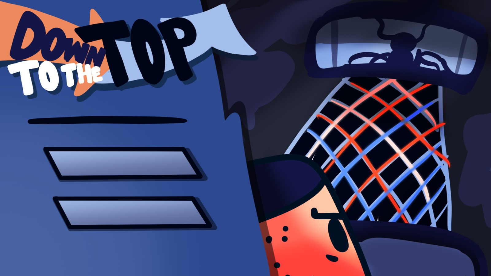
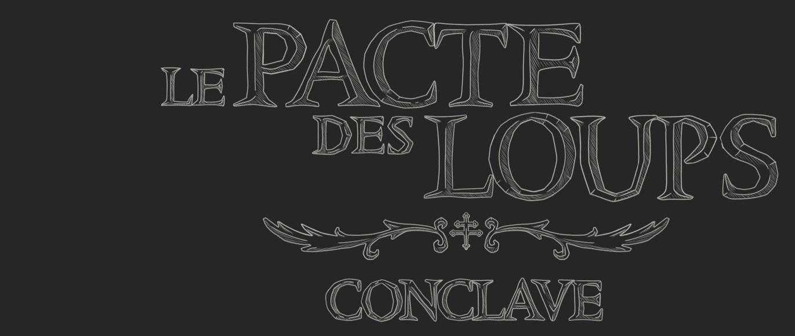
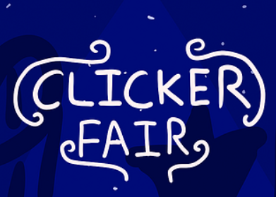

Alejandro Pires
Game & Narrative Designer
Specialized in combat systems, worldbuilding, and technical scriptwriting.
Currently developing "Down to the Top" and exploring new ludonarrative frontiers.

3D Combat & Narrative Design
I designed the 'Drunk Thai' combat system, balancing chaotic mechanics with precise gameplay. Technically, I programmed the core character controller and implemented diverse enemy AI variants by using Behaviour Graphs.
I led the project's Worldbuilding and lore development. I designed a vertical narrative structure centered around the infiltration of the Gran Tokoi Building, ensuring a cohesive blend of environmental storytelling and character arcs throughout the progression.

Narrative Design & Creative Direction | Global Game Jam 2026
A 72-hour Game Jam project that showcases high-intensity narrative execution. I co-authored a branching script rooted in Spanish linguistic humor, leveraging culture-specific gags and sayings that give the dialogue its unique strength. While its current scope is a Jam prototype, the project stands as a testament to my ability to lead conceptualization and coordinate with art teams via Mood Boards to create a cohesive, award-worthy experience.

Comprehensive Narrative GDD & Worldbuilding
A deep-dive technical document showcasing my expertise in Worldbuilding and Interactive Storytelling. I established a complex political ecosystem (18th Century Italy) filled with factions, morally gray characters, and a vertical narrative structure driven by player agency. The GDD features professional-grade scriptwriting formats and detailed level-flow schematics, demonstrating my ability to adapt film and theater conventions into cohesive gameplay progression.
The academic origins of my design journey.

My first university project developed in a team of four. I was responsible for the initial "American Fair" concept and the complete design of two core minigames. I focused on creating satisfying core loops and balancing the progression systems to ensure a consistent thematic experience for the player.